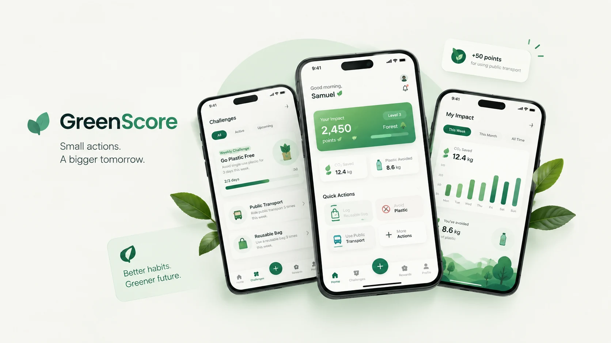

Points with a purpose
Actions are scored so effort is acknowledged immediately and consistently.
Project overview Sustainability app
Small actions. A bigger tomorrow.
A gamified mobile app that turns everyday eco-friendly actions into points, streaks and visible impact — designed and built as a functional MVP with AI-assisted development.

The problem & opportunity
Sustainability can feel abstract and overwhelming. Knowing that small actions matter is not the same as seeing them add up, and many people struggle to stay consistent.
GreenScore makes each action count in a way people can see: log an activity, earn points, build a streak and watch an estimated environmental impact grow over time.
Make the everyday choice feel rewarding, and the longer journey easier to keep.
My role & design process
I shaped the product experience and worked with AI-assisted development to turn it into something that runs on a device.
Start with the everyday action, then decide what feedback makes the next action feel worthwhile.
Map the routes from logging an action to seeing points, streaks, challenges and impact.
Create a calm, consistent mobile system, build the MVP with AI assistance, then test and refine it in Expo Go.
Key design decisions
Four choices carry the experience.
Actions are scored so effort is acknowledged immediately and consistently.
Weekly challenges give the habit a rhythm beyond a single good day.
Estimated CO₂ saved and plastic avoided turn small actions into something tangible.
Shared type, colour, spacing and components keep the mobile screens coherent.
The final experience
The recording shows the running GreenScore MVP in Expo Go — the dashboard, logging an action, impact feedback and challenges.
Walkthrough
The recording moves through the daily dashboard, logging an action, viewing the impact forest, checking progress and exploring challenges. It is a working build, not a prototype animation.
Outcome & key learnings
GreenScore moved from product thinking and interface design into a functional mobile build that was tested in Expo Go.
The case study shows the designed and built experience — logging, points, streaks, challenges and impact feedback. AI helped accelerate the build; the product and design decisions stayed human-led.
Points and streaks work best when they sit on top of a clear, useful action.
Running the app in Expo Go surfaced what a static design could not.
See it in use
A short look at the running mobile MVP.
The GreenScore dashboard and impact screens — points, weekly challenges and a running total of CO₂ saved and plastic avoided.